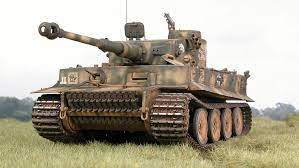

El Panzer III era un tanque medio desarrollado en Alemania a finales de los años 1930, ampliamente utilizado durante la Segunda Guerra Mundial.
En la actualidad el precio del tanque de juguete cuesta de $400 a 500 pesos mexicanos
Tanque Taiger 1 aleman

El Tiger I, cuya designación oficial era Panzer VI Tiger, fue un tanque pesado alemán ... Porsche al tenerlo muy avanzado le costó poco ponerlo en funcionamiento
En la actualidad el precio del tanque de juguete cuesta de $1,500 a 3,000 pesos mexicanos
Tanque T29 USA
El T29 fue un proyecto de tanque pesado estadounidense que se inició en marzo de 1944 para contrarestrar la aparición del tanque pesado alemán Tiger II.
En la actualidad el precio del tanque de juguete cuesta de $1,500 a 3,000 pesos mexicanos
tanque T 34 Ruso
La leyenda de las fuerzas blindadas Soviéticas y el tanque Soviético más fabricado de la Segunda Guerra Mundial, con un total de 33.805 vehículos.
En la actualidad el precio del tanque de juguete cuesta de $2,000 a 3,500 pesos mexicanos
.jpg)
.jpg)